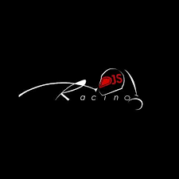
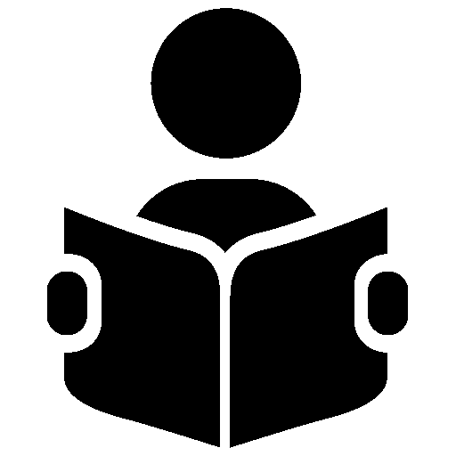

Work Experience

DJS Racing
(March 2019 - March 2021)
System Designer
● DJS Racing is the formula student team of Dwarkadas J Sanghvi College of Engineering. The team designs,
manufactures and tests formula race car prototypes in EV category.
● Designed and tested the Data Acquisition System (DAQ) of the car for season 2020 and 2021. Microcontrollers used
were STM32F1 blue pill and Teensy 4.1 respectively. Crucial modules used were ESP8266, HC-12 RF
Transmissiob module, GPS module and CH376S USB module.
● Designed PCBs like the DAQ PCB, Wheel speed sensor PCB and Load cell Amplifier PCB using Altium.
The Tann Mann Foundation
(Jun 2021 – Aug 2021)
Intern
● Developed a Lottery System page using JavaScript and Firebase which handles a database of users and generates a random lucky winner.about cancer
● Integrated the Raspberry Pi Cam to Raspberry Pi to develop a face recognition system using OpenCV.

Gravitas AI
(Nov 2021 - Jan 2022)
Research Intern and Content Editor
● Researched and catalogued content based on Cancer in a meaningful and structured manner which could
be used in designing AI based solutions in the field of Oncology such as developing a chatbot which gives information about cancer
● Designed detailed Conversation Flow designs for cognitive implementations.
Indian Insitute of Technology - Delhi
(June 2021 - May 2022)
Research Intern
● Investigated the application of Artificial Intelligence and Natural Language Processing in the Indian Judiciary
System and how AI may be used to augment the judiciary.
● Implemented several summarization models (LexRank, Latent Semantic Analysis, T5, Bart-large-CNN) using Machine Learning and Deep
Learning to summarize lengthy case documents which were 30% the length of the original documents and compared the results
Projects
Two-Way Real-Time Sign Language Recognition
Feb 2023 – Apr 2023
- Developed a Two-Way Real-Time Sign Language Recognition system using a Convolutional Neural Network (CNN) for American Sign Language (ASL) and Indian Sign Language (ISL).
- Used a dataset with 140 images for each sign for both language systems, used skin detection and hand segmentation techniques to isolate the hand region from the background.
- Implemented CNN for classification of signs and achieved an accuracy of over 90% on the test set.
- Click here for complete Report on the Project.
American Sign Language Recognition using Yolov5
Feb 2023 – Apr 2023
- Developed a Real-Time American Sign Language Recognition model using Yolov5
- Annotated 40 images for each sign using Roboflow to prepare the training and validation dataset.
- Received a confidence level of above 0.7 on all signs while testing.
- Click here for complete Report on the Project.
Fast Trajectory Replanning
Sep 2022 – Oct 2022
- Led a team of 3 in developing a maze-solving application using the A* search algorithm that enables an agent to navigate a 101x101 grid maze with obstacles to reach a target cell using the shortest route, with a Manhattan distance heuristic.
- Implemented and tested backward A* search and adaptive A* search algorithms, comparing their execution times to forward A* search.
- Created an interactive graphical user interface using the pygame module to visually display the shortest path the agent takes to reach the target.
- Click here for the complete project.
BidBazaar
Feb 2023 – Apr 2023
- An auction website like eBay, with features like user account creation, auctions, browsing and advanced search functionality, and admin and customer representative functions.
- Click here for the complete project.
Battery Management and Data Analytics of Battery and Vehicle Data
Sep 2021 – Apr 2022
- Led a team of 4 in designing a Data Acquisition System and Battery Management System and integrating it into the brain of the vehicle, (Vehicle Control Unit) to create a robust electronics system for an Electrics Vehicle.
- Prepared Machine Learning models such as Gradient Boosting, Random Forest, LASSO Regression to predict the SOC (State of Charge) of the battery of the vehicle. Gradient Boosting achieved the best R2 score of 0.977.
- Click here for complete Report on the Project.
Electrokeet
Sep 2019 - May 2021
- Our Team's entry to IICDC 2019-2020 competition - Electrokeet is a drone that uses thermal imaging and AI to detect pests at their nascent phases of life.
- Integrated AMG8833 with Arduino UNO to design a thermal camera.
- Used a Texas Instruments board, MSP430F5438 and integrated it to a soil sensor.
- Designed the front end of the market place of the website using HTML, CSS, JS.
- Click here for the youtube playlist on our competition submissions.
Unmanned Autonomous Vehicle
Sep 2020 - Apr 2021Sep
- Engineered an unmanned autonomous vehicle to improve the disaster management system of our country, by delivering food and medicines from time to time to the numerous quarantine centers.
- Performed a running simulation of the autonomous robot on Gazebo using ROS. Executed JS framework to design a GUI and assembled a prototype using Raspberry Pi 3B, Rpi Cam, Arduino UNO, HCSR-05 ultrasonic sensor and GPS module.
- Click here for complete Report on the Project.
Publications
S. Dalal, R. Kacheria and V. Venkataramanan, "A Comparative Study on Sign Language Recognition Methods," 2022 International Conference on Innovative Computing, Intelligent Communication and Smart Electrical Systems (ICSES), Chennai, India, 2022, pp. 1-7, doi: 10.1109/ICSES55317.2022.9914329.
I. Khetan, P. Sheth, S. Dalal, S. Mistry, V. Sharma and N. Katre, "Arbitrage in Cryptocurrency: A Survey," 2021 5th International Conference on Information Systems and Computer Networks (ISCON), Mathura, India, 2021, pp. 1-4, doi: 10.1109/ISCON52037.2021.9702308.
Unpublished
LexRank and PEGASUS Transformer for Summarization of Legal Documents
Machine Intelligence and Signal Processing (MISP)
- The research paper presented a novel method of abstractive summarization of legal documents using LexRank algorithm and PEGASUS Transformer
- The summaries generated by this method outperformed 5 other methods tested on 6 documents by achieving a ROUGE-F1 metric of 0.689.
- Awarded the Best Paper in the presented track at MISP, 2022.
{kind=link}